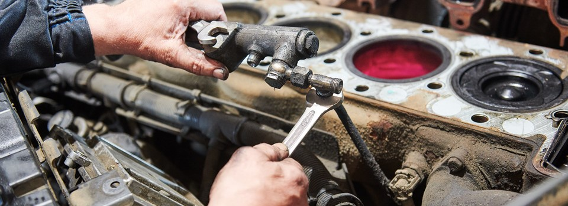

Explore o universo da Informática e suas aplicações no mundo da mecânica.
O curso de máquinas e motores é ideal para quem se interessa pelo funcionamento de sistemas mecânicos e quer entender como funcionam as tecnologias que movem o mundo ao nosso redor. Essa área envolve o estudo detalhado de motores, máquinas e equipamentos que são essenciais para diversos setores industriais e comerciais, como a indústria automotiva, agrícola, naval e até a aviação.
Durante o curso, você aprenderá sobre o funcionamento interno de motores a combustão e elétricos, os diferentes tipos de máquinas, e o processo de montagem, ajuste e manutenção dessas estruturas complexas. Além disso, desenvolverá habilidades em mecânica, termodinâmica e lubrificação, ganhando a capacidade de diagnosticar problemas e fazer reparos, garantindo que os equipamentos operem de forma eficiente e segura.
O conhecimento em máquinas e motores é extremamente valorizado, especialmente em um mercado que depende cada vez mais de equipamentos bem mantidos e de profissionais capazes de evitar falhas operacionais. Trabalhar nessa área te permite contribuir para a otimização e a durabilidade de máquinas vitais para diversas operações, reduzindo custos e aumentando a produtividade das empresas.
Esse curso também oferece vantagens práticas para a vida pessoal, pois com o conhecimento técnico, você poderá entender e realizar manutenções em motores e equipamentos menores, como carros e motocicletas, economizando com reparos básicos.
Mesmo que você não tenha experiência, o curso é estruturado para dar uma base sólida, desenvolvendo sua compreensão e confiança para lidar com esses sistemas complexos. Ao concluí-lo, você estará preparado para trabalhar em uma área que combina técnica e prática, onde cada máquina ou motor em funcionamento é um reflexo das suas habilidades e dedicação.
Para informções sobre o processo da matrícula, clica aqui:
Matrícula